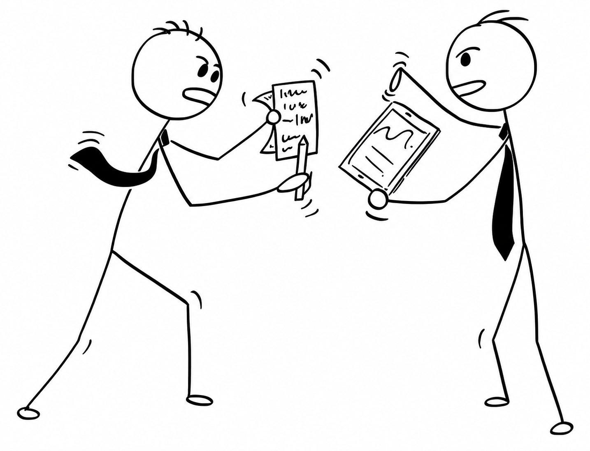

Plata pierdută
Chiriașul zice că a plătit. Proprietarul nu găsește dovada. Amândoi au dreptate, din punctul lor de vedere.
Pentru proprietari și chiriași din România
O aplicație simplă unde proprietarul și chiriașul văd, amândoi, aceleași plăți, aceleași facturi și aceeași dovadă la garanție. Fără WhatsApp pierdut prin conversații, fără „ți-am zis, ba nu mi-ai zis”.
Lansăm în 2027. Zero spam, un singur email când e gata.
Problema

Chiriașul zice că a plătit. Proprietarul nu găsește dovada. Amândoi au dreptate, din punctul lor de vedere.
La final, apar pagube. Cine le-a făcut? De când sunt acolo? Fără poze de la început, discuția devine cuvântul unuia contra celuilalt.
Proprietarul plătește furnizorul, dar uită să ceară banii înapoi. Sau chiriașul uită să-i dea. Trece o lună, apoi două.
Cum funcționează
Proprietarul și chiriașul intră în aceeași aplicație, fiecare cu rolul lui. Legătura se face printr-un link de invitație simplu.
Transfer bancar (chiriașul încarcă dovada, proprietarul confirmă) sau cash (proprietarul marchează direct). Fără ambiguitate despre cine a plătit ce.
Proprietarul încarcă factura + suma datorată. Chiriașul plătește, proprietarul confirmă. Istoric clar, pentru amândoi.
Starea apartamentului documentată de la intrare, actualizată periodic. La final, garanția se calculează clar: ce s-a reținut și de ce.
Diferența
Există aplicații care bifează „plătit” sau „neplătit”. Chirivo merge mai departe: leagă garanția de poze reale, documentate la momentul potrivit — la intrare și la fiecare verificare periodică, cu preaviz, exact cum prevede legea. Când vine ziua predării, nu mai e o discuție în ceață. E o listă clară, cu poze și date, la care se uită amândoi.
Pentru cine
Nu construim pentru fonduri imobiliare sau portofolii uriașe. Construim pentru situația reală, de zi cu zi: proprietari care vor o relație clară cu chiriașii lor, fără birocrație inutilă — fie că au un singur apartament sau câteva.
Aplicația e în construcție acum. Lasă-ți emailul și te anunțăm exact când e gata de testat — nu mai devreme, nu cu promisiuni goale.
Lansăm în 2027. Zero spam, un singur email când e gata.